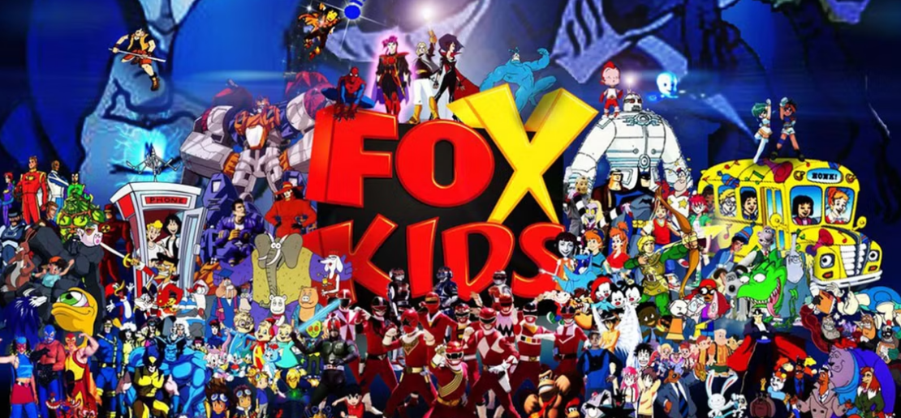
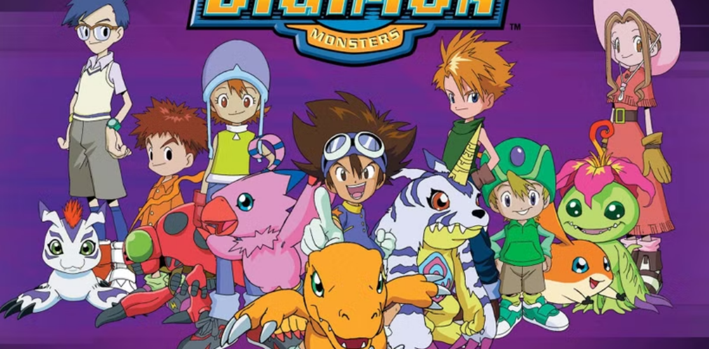

10:00
10:00
 10:30
10:30
 11:00
11:00
 11:30
11:30
 12:00
12:00
 12:30
12:30
 13:00
13:00
 13:30
13:30
 14:00
14:00
 14:30
14:30
 15:00
15:00
 15:30
15:30
 16:00
16:00
 16:30
16:30
 17:00
17:00
 17:30
18:00
18:30
17:30
18:00
18:30
 19:00
19:00
 19:30
20:00
20:30
21:00
21:30
22:00
22:30
19:30
20:00
20:30
21:00
21:30
22:00
22:30
 23:00
23:00
 23:30
23:30
Fox Kids Unleashed! The Next Chapter (Part 2)

Disney's acquisition of Fox Kids: its demise in the United States and international expansion
By 2001, the Fox Kids programming block had only reached 9% of the children's audience in the United States, down from 21% in 1997. (before Disney and Warner became competitors). It was clear that the company was no longer viable, so News Corporations' owner Rubert Murdoch and Haim Saban agreed to sell it to a third party. Under Michael Eisner's leadership, Disney expressed interest in acquiring Fox Family Worldwide: the acquisition of Fox Family would help expand the Disney brand internationally as well as ABC. With Fox Kids rumored to be sold, Saban kept Digimon 03 and Transformers: New Generation as close to their original versions as possible, greenlit comedy series The Ripping Friends, and made Power Rangers: Time Force one of its more dramatic and serious seasons. The news that Fox Family Worldwide would be sold to The Walt Disney Company for $5.3 billion became public in July 2001. The deal included: Fox Kids Network Latin America, 76% of Fox Kids Europe (the remaining 24% would be kept by the Amsterdam Stock Market), Saban Entertainment (including their facilities, the Power Rangers franchise and Digimon's United States license), Fox Kids content library (which included U.S. licenses of japanese series and content library from Saban, Marvel, DePattie-Freleng and New World, excluding productions from Hasbro, Jim Henson, United Artists, Warner Bros. and Dr. Seuss) and finally Fox Family Channel. Fox and 20th Century Fox would keep the Fox Kids programming block in the United States, which was not included in the sellout. By 2002, Fox had lost interest in the block and was considering selling it. In order to purchase it, DIC Entertainment and 4Kids Entertainment went to court, with the latter eventually winning. Fox Kids aired for the final time in the United States on September 7, 2002, and FoxBox debuted a week later. This new block was managed by 4Kids and included shows like Teenage Mutant Ninja Turtles, Sonic X, Kirby, Ultraman Tiga, and Kid Muscle from 2003. The block became a staunch opponent of Kids' WB (which continued to air shows like Yu-Gi-Oh! and Pokémon). Disney renamed Fox Family as ABC Family, with this channel and Toon Disney premiering the remaining Saban series episodes. Power Rangers: Wild Force was the only exception, with new episodes airing on ABC's family block.
Disney's One Saturday Morning became ABC Kids on September 14, 2002 (the same day FoxBox debuted). The renamed programming block would air the second batch of Power Rangers: Ninja Storm episodes, the franchise's first series entirely produced by Disney (and also the first one filmed in New Zealand). Furthermore, Disney shifted the premiere of Digimon Frontier in the United States to their programming block on the UPN Network, which was later shut down in 2003. Finally, Fox Kids' archive content would begin airing on ABC Family and Toon Disney. Saban Entertainment was dissolved, and the division in charge of Power Rangers was renamed BVS Entertainment, while the branch in charge of dubbing Digimon into English was renamed Sensation Animation. Despite the abrupt disappearance of the Fox brands in the United States, Fox granted Disney a free license to use the name in the European and Latin American markets. Fox Kids remained active for a few years after being taken over by Disney. However, some modifications were made: fewer external shows were acquired, and these could not be costly. In addition, some acquisitions required consultation with Disney (for instance Cyber Team in Akihabara would have premiered on Fox Kids in 2001 but Disney discarted it, so it ended on Locomotion). Fox Kids would also have access to Disney's content library (although not their movies). Furthermore, the company imposed strict brand separation rules to ensure that audiences did not overlap with Disney Channel. During this transition period, Fox Kids Latin America launched the midnight programming block Insomnio, which featured classic shows such as Marvel's The Spider-Woman, Spider-Man and his Amazing Friends, The Incredible Hulk from 1982, Batman from 1966, The Three Stooges, Woody Woodpecker, and Mortadelo y Filemón from Spain. Dilbert, a satirical and more adult show, was added to the lineup, as was 1957's El Zorro (owned by Disney). This Fox Kids attempt resembled Nickelodeon's and Cartoon Network's efforts to reach an older audience when they imported the Nick-At Nite and Adult Swim blocks, respectively. Fox Kids' partnership with Televix in Latin America, on the other hand, would end once the network began airing 4Kids series like Kirby or Teenage Mutant Ninja Turtles. Disney's Gargoyles, Totally Spies, and Mega Man NT Warrior were added to the lineup. Surprisingly, Nickelodeon's hit show The Oddly Godparents also joined Fox Kids Latin America, following a deal that allowed Nelvana to license the show globally. The Planeta Pokémon block was launched in Spain, and it featured premiere episodes of the series, as well as interviews and reports about the videogame industry. In addition, they released Zona Anime, their own version of the Invasión Anime block. The channel launched a girl-oriented programming block (Girl Power in Latin America, Zona Chicas in Spain) in both markets, featuring shows such as Totally Spies and Braceface. Fox Kids Europe also coproduced the Gadget and the Gadgetinis show, a sequel to the classic series The Inspector Gadget, with DIC Entertainment and Saban International Paris. Despite the change in ownership, Fox Kids remained popular around the world. Things, however, would not remain the same for long.
Jetix is the new name for Fox Kids.

As previously stated, Fox granted Disney a temporary license to use the Fox Kids name outside of the United States. However, it was obvious that the network would have to be rebranded at some point. Originally, the Fox Kids Network was to be renamed Toon Disney, as it was Disney's second cable channel in the United States. However, Fox Kids Europe and Latin America refused to use the Disney brand because it was associated with fantasy, theme parks, and musicals, which were very different from the image Fox Kids developed. At one point, Disney considered striking a new deal with Fox in order to continue using the brand indefinitely, but the first was concerned that the license would also include the United States (so they could import programming and international image from Fox Kids at some point). Fox refused, and there was no agreement. Jetix, the name for the networks and an action/comedy block that would be included in every Toon Disney available around the world, was announced in January 2004 by ABC Family Worldwide, Fox Kids Europe, and Fox Kids Latin America. The Fox Kids Networks in France and Latin America were the first to be renamed Jetix in July 2004, with Germany being the last to do so in June 2005.
By this point, Fox Kids' most popular shows were X-Men, Spider-Man, and Power Rangers, which were later joined by Beetleborgs (another Saban adaptation of a Japanese tokusatsu same as Power Rangers). Fox Kids was relegated to less competitive timeslots in markets where The WB aired it. As a result, Fox Kids' audience leadership in kids and family field was lost. The third factor that contributed to Fox Kids' decline was its internationalization. In 1995, Australian cable operator Foxtel (owned by News Corporation) launched the world's first Fox Kids Network in Australia. News Corporations demonstrated an interest in the potential of international paid television by entering into an agreement with Saban Entertainment to launch more Fox Kids channels around the world. Saban became the company's largest content provider after Warner Bros Animation parted ways with Fox Kids. In 1996, Saban's production company merged with Fox Children's Production to form Fox Kids Worldwide, which would oversee the brand globally. Fox Kids Worldwide acquired The Family Channel in 1997, renaming it Fox Family Channel, with the goal of competing with the domains of Nickelodeon and Cartoon Network in the United States paid-tv field. This channel was sold due to its low audience and profitability, which made it difficult to compete with the networks mentioned above.
← Volver a artículos